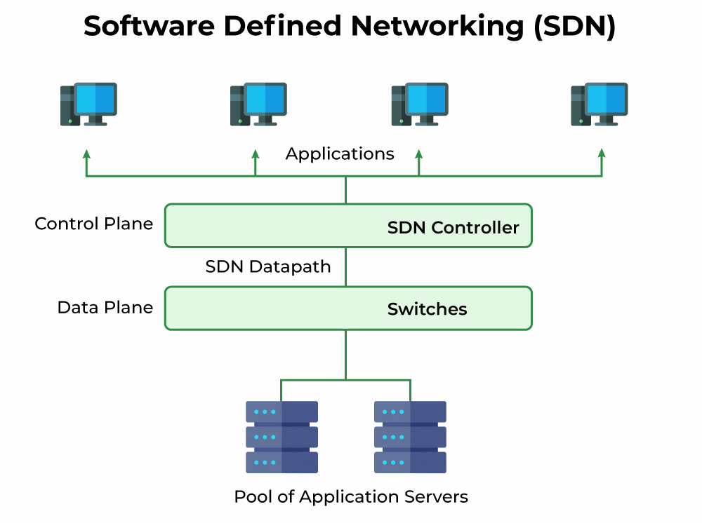
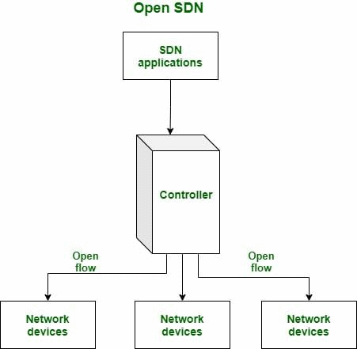
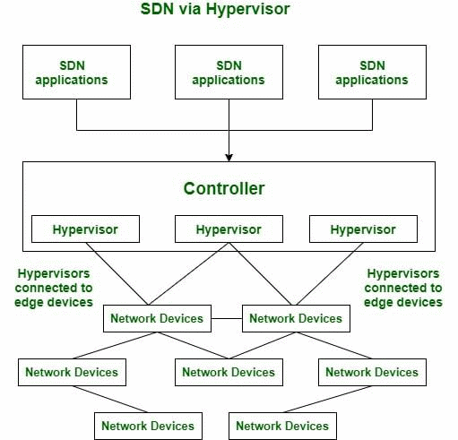
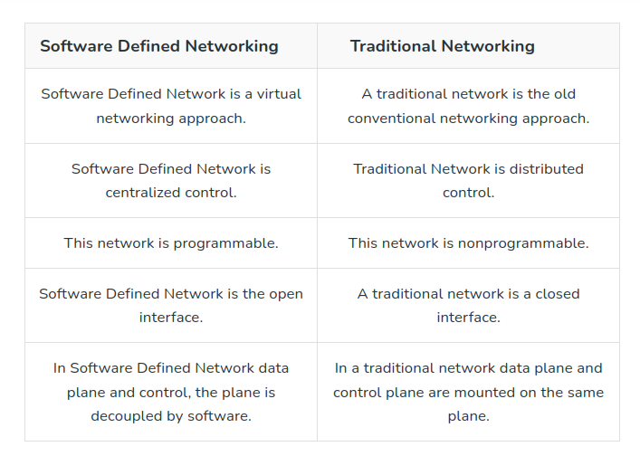

SDN stands for Software Defined Network which is a networking architecture approach. It enables the control and management of the network using software applications. Through Software Defined Network (SDN) networking behavior of the entire network and its devices are programmed in a centrally controlled manner through software applications using open APIs.
To understand software-defined networks, we need to understand the various planes involved in networking.
Data Plane
Control Plane
Data plane: All the activities involving as well as resulting from data packets sent by the end-user belong to this plane. This includes:
Forwarding of packets.
Segmentation and reassembly of data.
Replication of packets for multicasting.
Control plane: All activities necessary to perform data plane activities but do not involve end-user data packets belong to this plane. In other words, this is the brain of the network. The activities of the control plane include:
Making routing tables.
Setting packet handling policies.

Software Defined Networking
Better Network Connectivity: SDN provides very better network connectivity for sales, services, and internal communications. SDN also helps in faster data sharing.
Better Deployment of Applications: Deployment of new applications, services, and many business models can be speed up using Software Defined Networking.
Better Security: Software-defined network provides better visibility throughout the network. Operators can create separate zones for devices that require different levels of security. SDN networks give more freedom to operators.
Better Control with High Speed: Software-defined networking provides better speed than other networking types by applying an open standard software-based controller.
In short, it can be said that- SDN acts as a “Bigger Umbrella or a HUB” where the rest of other networking technologies come and sit under that umbrella and get merged with another platform to bring out the best of the best outcome by decreasing the traffic rate and by increasing the efficiency of data flow.
Enterprises use SDN, the most widely used method for application deployment, to deploy applications faster while lowering overall deployment and operating costs. SDN allows IT administrators to manage and provision network services from a single location.
Cloud networking software-defined uses white-box systems. Cloud providers often use generic hardware so that the Cloud data center can be changed and the cost of CAPEX and OPEX saved.
The three main components that make the SDN are:
SDN Applications: SDN Applications relay requests or networks through SDN Controller using API.
SDN controller: SDN Controller collects network information from hardware and sends this information to applications.
SDN networking devices: SDN Network devices help in forwarding and data processing tasks.
In a traditional network, each switch has its own data plane as well as the control plane. The control plane of various switches exchange topology information and hence construct a forwarding table that decides where an incoming data packet has to be forwarded via the data plane. Software-defined networking (SDN) is an approach via which we take the control plane away from the switch and assign it to a centralized unit called the SDN controller. Hence, a network administrator can shape traffic via a centralized console without having to touch the individual switches. The data plane still resides in the switch and when a packet enters a switch, its forwarding activity is decided based on the entries of flow tables, which are pre-assigned by the controller. A flow table consists of match fields (like input port number and packet header) and instructions. The packet is first matched against the match fields of the flow table entries. Then the instructions of the corresponding flow entry are executed. The instructions can be forwarding the packet via one or multiple ports, dropping the packet, or adding headers to the packet. If a packet doesn’t find a corresponding match in the flow table, the switch queries the controller which sends a new flow entry to the switch. The switch forwards or drops the packet based on this flow entry.
A typical SDN architecture consists of three layers.
Application layer: It contains the typical network applications like intrusion detection, firewall, and load balancing
Control layer: It consists of the SDN controller which acts as the brain of the network. It also allows hardware abstraction to the applications written on top of it.
Infrastructure layer: This consists of physical switches which form the data plane and carries out the actual movement of data packets.
The layers communicate via a set of interfaces
called the north-bound APIs(between the application and control
layer) and southbound APIs(between the control and infrastructure
layer).

SDN Architecture
There are several models, which are used in SDN:
Open SDN
SDN via APIs
SDN via Hypervisor-based Overlay Network
Hybrid SDN
1. Open SDN: Open SDN is implemented using the OpenFlow switch. It is a straightforward implementation of SDN. In Open SDN, the controller communicates with the switches using south-bound API with the help of OpenFlow protocol.

Open SDN
2. SDN via APIs: In SDN via API, the functions in remote devices like switches are invoked using conventional methods like SNMP or CLI or through newer methods like Rest API. Here, the devices are provided with control points enabling the controller to manipulate the remote devices using APIs.
3. SDN via Hypervisor-based Overlay Network: In SDN via the hypervisor, the configuration of physical devices is unchanged. Instead, Hypervisor based overlay networks are created over the physical network. Only the devices at the edge of the physical network are connected to the virtualized networks, thereby concealing the information of other devices in the physical network.

SDN via Hypervisor-based Overlay Network
4. Hybrid SDN: Hybrid Networking is a combination of Traditional Networking with software-defined networking in one network to support different types of functions on a network.
Software Defined Networking |
Traditional Networking |
|---|---|
Software Defined Network is a virtual networking approach. |
A traditional network is the old conventional networking approach. |
Software Defined Network is centralized control. |
Traditional Network is distributed control. |
This network is programmable. |
This network is nonprogrammable. |
Software Defined Network is the open interface. |
A traditional network is a closed interface. |
In Software Defined Network data plane and control, the plane is decoupled by software. |
In a traditional network data plane and control plane are mounted on the same plane. |
For more details you can refer differences between SDN and Traditional Networking article.

Difference between SDN and Traditional Networking
The network is programmable and hence can easily be modified via the controller rather than individual switches.
Switch hardware becomes cheaper since each switch only needs a data plane.
Hardware is abstracted, hence applications can be written on top of the controller independent of the switch vendor.
Provides better security since the controller can monitor traffic and deploy security policies. For example, if the controller detects suspicious activity in network traffic, it can reroute or drop the packets.
The central dependency of the network means a single point of failure, i.e. if the controller gets corrupted, the entire network will be affected.
The use of SDN on large scale is not properly defined and explored.
"GeeksforGeeks helped me ace the GATE exam! Whenever I had any doubt regarding any topic, GFG always helped me and made my concepts quiet clear." - Anshika Modi | AIR 21